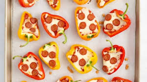

Pepper Pizza Bites

Description
If you are anything like me, you like pizza. But you can't eat pizza that often and stay healthy. These mini pepper pizza bites gives you a healthy option when you are craving the za.
Ingredients
- 8 ounces mini bell peppers (about 8 peppers), sliced in half lengthwise and seeded
- 3/4 cup marinara sauce
- 1/2 cup shredded mozzarella cheese
- 1 ounce mini pepperoni slices
Steps
- Preheat oven to 350 degrees F and line a baking sheet with parchment. Place sliced mini bells on the baking sheet, cut sides up.
- Divde marinara sauce between peppers using a small spoon. Top peppers with cheese. Place 3 slices of mini pepperoni on top of cheese in each pepper.
- Bake in preheated oven for 12 mninutes. Turn the oven's broiler to High, and broil peppers until cheese is melted and startingto brown, about 3 minutes.
Home